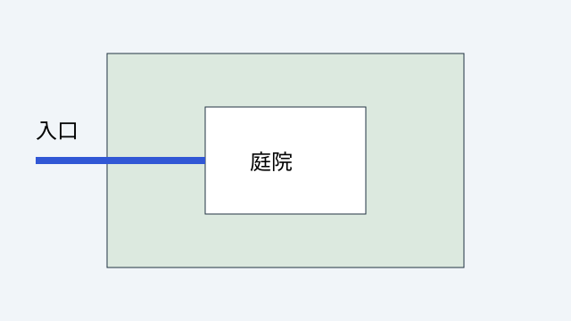

学习成果
基于图像位置与明确标准提出改进并解释理由
动线与庭院
这是原创示意图。蓝线连接入口与庭院。评价标准是路径可辨识、可达性与空间停留，图形本身不代表已通过建筑规范审查。

观察、修改与理由
基于图像中的动线与庭院布局，依据路径辨识度与空间停留标准，提出一项具体改进方案并说明理由。
- 观察位置：明确指出入口（起点）、路径连接段或中央庭院（停留空间）。
- 评价标准：采用路径可辨识性、通达流畅度或停留空间的舒适私密性作为评估依据。
- 修改与理由：给出具体方案（例如在入口增设导引景观以强化路线指向，或在庭院周围设置遮阳回廊增加停留功能）并逻辑闭环说明理由。
合卷检索
暂时遮住图片，描述入口到庭院的路线，并用一个明确标准解释你的修改方案。